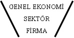
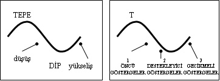

TEMEL ANALİZ: TEMEL, BİR GÜN...
...ormanda ağaç kesmeye gitmiş. Gözüne kestirdiği koca koca ağaçları baltayla birer birer devirerek eve odun götürmeyi amaçlıyormuş. Üçüncü dev çınarı da tam halletmek üzereyken, modern giyimli, şehirli çocuklar gelmiş yanına telaşla. Meğerse, çevreci Bağdat Caddesi gençleri de orada “trekking” yapmıyorlar mıymış?
Gençler, Temel’i biraz tartaklamış ve ağacı kesmemesi konusunda uyarmışlar. Delikanlı Temel de “Size ne” gibilerden diklenince bizimkini bir güzel dövmüşler:
• Doğanın düşmanı.
• Doğanın dengesini bozdu.
• ...
Temel neye uğradığını anlayamadan bir araba dayak yemiş ve gözü mosmor, üst baş perişan zar zor köye dönmüş. Kahvenin girişinde, köylüler durumunu görünce koşup koluna girmişler. Ve merakla sormuşlar:
– Hayırdır Temel? Ne oldu, kim yaptu sana bunu?
Bizimki perişan, ama hâlâ durumu anlayamamış bir şekilde yanıtlar:
– Valla anlayamadum da? Bir karışıklık oldu herhâlde. Birisi Doğan’ın yengesini bozmuş, uşaklar benden bildiler.
– ...?
İşte Temel ve Analizi budur. Siz olayın aslını, temelini anlayamazsanız, üzerine inşa edeceğiniz görüş ve çalışmalar da anlamsız olacaktır. “Doğanın dengesi” ile “Doğan’ın yengesi”ni birbirine karıştırmamak lazım!
Detaylardan önce büyük resmi görmek lazım. Nasıl bağladım ama!
YUKARIDAN AŞAĞIYA YAKLAŞIMI (YAY)
Piyasa profesyonellerinin ağzından şöyle sözler duyamazsınız:
– Abi içimde bir his var; Beko gidecek...
– Bizim bir arkadaş var, borsadan çok ekmek yedi zamanında, “Vestel alın” diyor.
– Bunu almak lazım, taş gibi kâğıt valla...
Dört mevsim “taş gibi” yatırımlar yoktur. Göreceli olarak “sağlam” ya da düşük riskli yatırımlar vardır. Her mevsim olmaz bu işler. Önce hangi mevsimde olduğunuza karar vermelisiniz. Mevsimi saptadıktan sonra araçta ne gibi önlemler almanız gerektiğini ve hangi lastikleri kullanacağınızı belirlemek daha kolay olacaktır.
“Yukarıdan Aşağıya Yaklaşımı (YAY)” ya da diğer tanımıyla “huni” yaklaşımı, işte tam da bunu önermektedir. Öncelikle tıpkı bir huninin üst tarafı gibi, daha geniş bir platformda veriler incelenmeli, makro kararlar alınmalı, ardından da huninin alt ucuna doğru, analizi yavaş yavaş daraltmalı...
YAY’ın özellikle hisse senedi yatırım analizi için uygun olduğunu belirtmekte yarar görüyoruz.
İlk adımda huni yaklaşımı, genel ekonomik durumun incelenmesini öngörüyor. Buna göre ekonomik konjonktür detaylı bir biçimde gözden geçirilmeli ve pozitif ve negatif değişkenler saptanmalı. Ancak ekonominin yönü belirlendikten sonra ikinci aşamaya geçilmeli.

İkinci adım ise “sektör analizi”. Ekonomik durum cephesinde her şey yolunda ise, bir sonraki adımda, bu “iyi ekonomik durum”dan hangi sektörlerin daha olumlu etkileneceklerini saptamak gerekiyor. Mevcut durumun olumlu yönde etkilemesi öngörülen sektörler masaya yatırılıyor ve öne çıkanlar detaylı biçimde inceleniyor.
Üçüncü adımda ise, kitabımızın konusu olmayan “firma analizi” geliyor. Buna göre, ekonomik durumun iyi olmasına bağlı olarak olumlu yönde etkilenecek olması beklenen sektörler dâhil, şirketlerden hangilerine yatırım yapılacağı saptanıyor. Bu bölüm biraz daha “finansal analiz” konusuna gireceğinden kitabımızın konusunu aşıyor.
Kısaca özetlemeye çalıştığımız ve üç adımdan oluşan (YAY) hem ekonomik hem de finansal analizin birlikte kullanılmasını gerektirmekte. Bu iki bacaktan “ekonomik analiz” hem bu bölümde hem de ileride karşınıza çıkacak olan “Ekonomiye Bulaşmak: Makroekonomik Göstergeler ve Yorumlanması” bölümünde detaylı biçimde incelenecek. Ancak daha önce de belirtmiş olduğumuz üzere, “finansal analiz”den bahsetmeyeceğiz ki başka yazarlar da ekmek yiyebilsinler.
GENEL EKONOMİ ANALİZİ
Ekonomiye “büyük resim” olarak bakmak aslında oldukça zor bir iştir. Ekonomiye ait bazı rakamlar iyi, bazıları ise kötü olarak yorumlanır. Tümüyle aynı yönde sinyal vermeyen verileri tek bir kelime ile “iyi” ya da “kötü” olarak tanımlamak da işte bu nedenle oldukça güçtür.
Tüm bu güçlüklerine rağmen, genel durumu çok fazla detaya inmeden tespit etmenin birtakım “göstergeleri” vardır. Bu göstergeler sinyal verdikleri zamanlamaya bağlı olarak farklı şekillerde isimlendirilebilir.

Bu göstergelerden, trend değişikliği henüz başlamadan önce sinyal veren göstergelere “öncü göstergeler”, hareket başladığında, hareketin içindeyken sinyal veren göstergelere “destekleyici göstergeler” ve hareket başladıktan bir süre sonra sinyal verenlere de “gecikmeli göstergeler” denmektedir.
Adı geçen gösterge gruplarının altında onlarca gösterge mevcuttur. Hatta bu göstergelerin standart ve literatüre geçmiş olanlarının yanı sıra sizin güvenilir bularak kullanabileceğiniz başkaları da olabilir. Hangi göstergenin kullanılıp kullanılamayacağına sizden başka kimse karar veremez. Bu anlamda, eğer bindiğiniz taksileri kullanan şoför arkadaşların kredi kartları konusundaki yakınmaları ya da hafta sonları belli bir marketin otoparkındaki araç sayısı sizin için güvenilir bir gösterge ise mutlaka o göstergeyi kullanmalısınız. Kritik konu, göstergenin işe yaramasıdır. Yoksa kim takar bilimselliğini...
Bu noktada, okuyucuya fikir vermesi açısından bazı göstergeleri sıralamakta yarar görüyoruz. Her bir göstergenin ne gibi bir bilgi verdiği konusunu ise hayal gücünüze bırakıyoruz. Bu göstergelerin bir kısmı akademik çevrelerce, bir kısmı da benim çevremce (ne demekse?) rağbet görmektedir:
Öncü Göstergeler:
• Tüketim malı ithalatı
• Yeni işyeri açılması
• İşten çıkarma oranları
• İş arayanların oranı
• Yatırım malı ithalatı
• Gazete ve internetteki eleman arama ilanlarının hacmi
• ...
Destekleyici Göstergeler:
• Sanayi ve ticaretteki satışlar
• Sanayideki kapasite kullanım oranı
• Sanayi üretim seviyesi
• Ticaretteki borç düzeyi
• Senet ve çek tahsilat sorunları
• Sorunlu kredi miktarı
• ...
Gecikmeli Göstergeler:
• Sanayideki stoklar
• Ticaretteki stoklar
• Otomobil bayilerinin arka bahçelerinde biriken araçlar
• İstediğiniz renkteki arabanın istediğiniz anda teslim edilebiliyor olması (ya da birkaç ay sonraya gün verilmesi)
• Borsa endeksi
• Banka bireysel kredi faiz oranları
• İş merkezlerindeki boş işyeri sayısı
• ...
Kolaylıkla görüleceği üzere, aslında erişebileceğiniz, size anlamlı gelen, ölçülebilir her gösterge işe yarayabilir. Bu nedenle, hangi durumda, hangi göstergenin okunması gerektiğine siz karar vermelisiniz. İncelemeyi düşündüğünüz göstergeler yukarıda yazılanların çok dışında da olabilir. Ayrıca bir göstergenin öncü mü, yoksa gecikmeli bir gösterge mi olduğunun da açıkçası çok önemi yoktur. Kimi zaman bu göstergeler arasındaki zaman çok kısa olacak, hatta tam olarak ne zamanı gösterdiği bile belli olamayabilecektir. Bununla birlikte, neyi gösterdiğini doğru saptamak ve işe yaradığını kanıtlamak çok daha önemli olacaktır.
SEKTÖR ANALİZİ
YAY’a göre, genel ekonomiyi inceledikten ve bir fikir sahibi olduktan sonra, ekonomideki olumlu ya da olumsuz gelişmelerin en çok hangi sektörleri etkileyeceğini saptamak gerekecektir. Konjonktürün pozitif yönde gelişeceğini öngörüyorsak, bu durumun hangi sektörleri etkileyeceğini saptamak önemli olacaktır. Zira, pozitif gelişme tüm sektörleri aynı düzeyde etkilemeyecektir. Pozitif gelişmeden en çok faydayı elde etmek ise en rasyonel karar olacaktır.
Örneğin ekonomik konjonktürün iyi olacağını, faizlerin düşük, tüketici güveninin yüksek olacağını düşünüyorsak dayanıklı tüketim mallarına, otomobile ve konuta olan talebin yüksek olacağını tahmin edebiliriz.
Benzer biçimde, uzun vadeli kredilerin düşük maliyetlerle verilebileceği öngörüsü, konut sektörünü canlandıracak, bu durumda da çimento sektöründe ciddi bir canlanma beklenecektir.
Yukarıdaki her iki örnek için de, durumun anlatılanın tam tersi bir noktada olmasının ilgili sektörlerde daralmaya yol açacağını da öngörebiliriz.
Öte yandan, sektörlere özel dönemsellikler (mevsimsellik) de mevcuttur ve analiz yaparken bu dönemselliklerin de dikkate alınmasında yarar olacaktır. Örneğin inşaatlar bahar ve yaz aylarında yoğunluk göstereceğinden çimento ve diğer yan sektörlerin bu dönemde canlılık göstereceği ve bu sektörlerdeki hisselere yönelim olacağı düşünülebilir. Benzer biçimde gazlı içecek, turizm, alkollü içecek, pimapen vs. gibi sektörler de yaz döneminde iyi performans göstermesi beklenen sektörler olacaktır.
FİRMA ANALİZİ
YAY’a göre, ilk adım olarak ekonomiyi detaylı incelemek gerekiyor. Bu inceleme sonunda, genel konjonktürün oldukça iyi olduğunu, ülkede yaşam standardının yükseldiğini ve kişi başına gelir düzeyinin de oldukça iyi olduğunu varsayalım.
İkinci aşamada, bu olumlu konjonktürün hangi sektörlere en olumlu yansıyacağını belirlemek gerekecek. Sonuçta, olumlu durumdan maksimum faydayı çıkarmak çok mantıklı. Diyelim ki olumlu konjonktürün, dondurulmuş gıda sektörünü iyi yönde etkileyeceğini ve sektördeki firmaların muazzam kârlar elde etmesini bekliyoruz. Bu da ikinci adımdı.
Peki, ama hangi gıda firması en iyisi olacak? İşte bu noktada detaylı bir mali analiz gerekecek. İşletmelerin mali tablolarını inceleyerek mali yapılarını saptamak ve mevcut durumdan hangisinin en olumlu sonuçlar elde edeceğini tespit etmeye çalışmak YAY’ın üçüncü ve son aşamasını oluşturuyor.; ki o da bu kitabın konusu değil ne yazık ki.
O hâlde...
Bu bölümde bir bakıma, “Ekonomiye Bulaşmak: Makroekonomik Göstergeler ve Yorumlanması” bölümüne hazırlık olarak da yorumlayabileceğimiz temel analizi inceledik.
Yukarıdan Aşağıya Yaklaşımı (YAY) olarak tanımladığımız modele göre, bir hisse senedi yatırımı yapmadan önce, adım adım aşağıdaki analizlerin yapılması gerekmekteydi:
• Genel Ekonomi Analizi
• Sektör Analizi
• Firma Analizi
Bunlardan genel ekonomi analizi, bizim asıl ilgi alanımızı oluşturdu. Bu analizin yapılmasında zamanlama durumuna göre bazı göstergeler tanımladık:
• Öncü Göstergeler
• Destekleyici Göstergeler
• Gecikmeli Göstergeler
Son olarak da asıl işimiz olmamakla birlikte, konu bütünlüğü açısından YAY’ın diğer başlıkları olan sektör analizi ve firma analizi konularından da kısaca bahsettik.